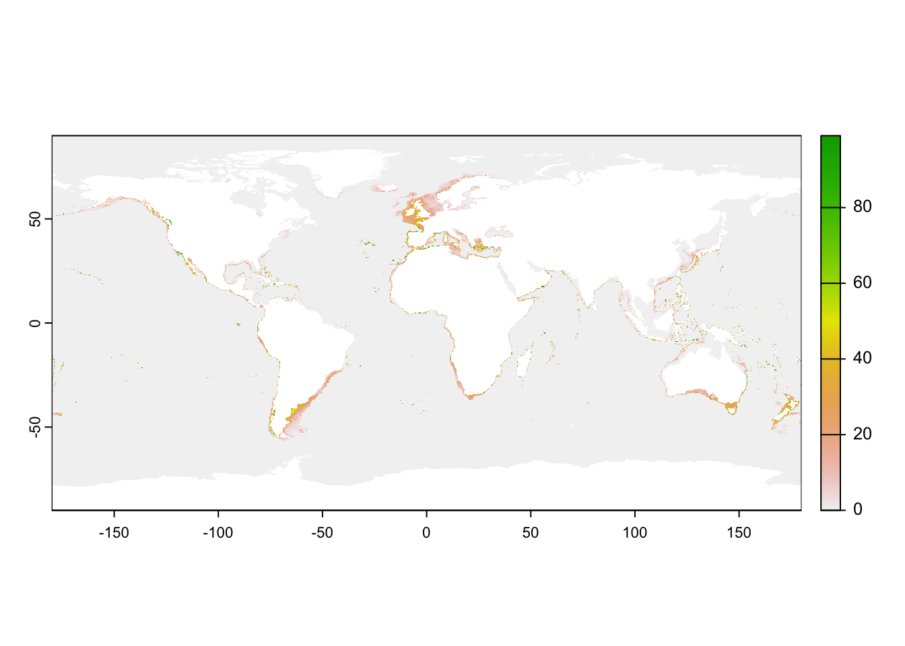
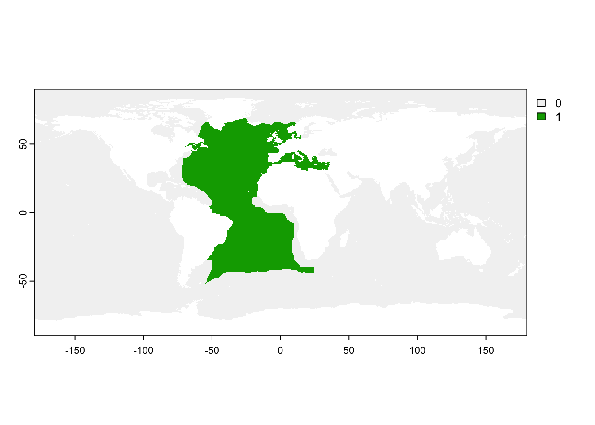
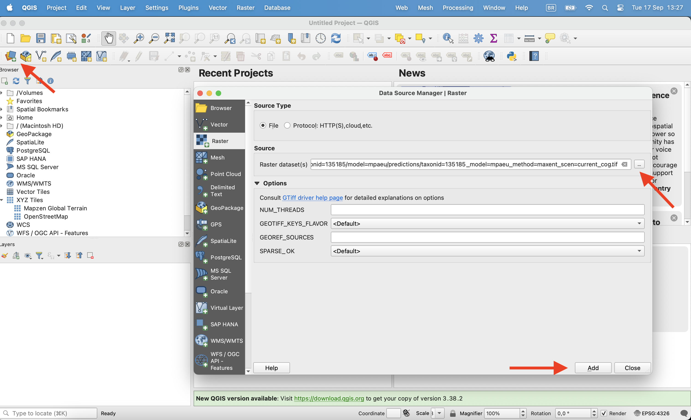
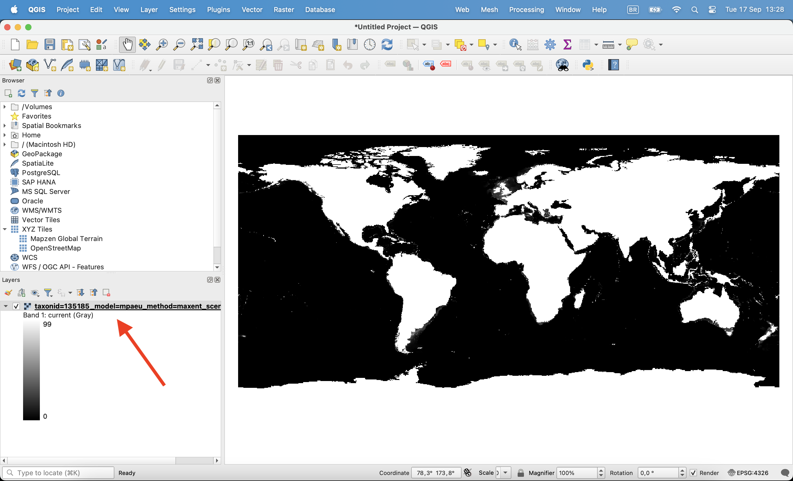
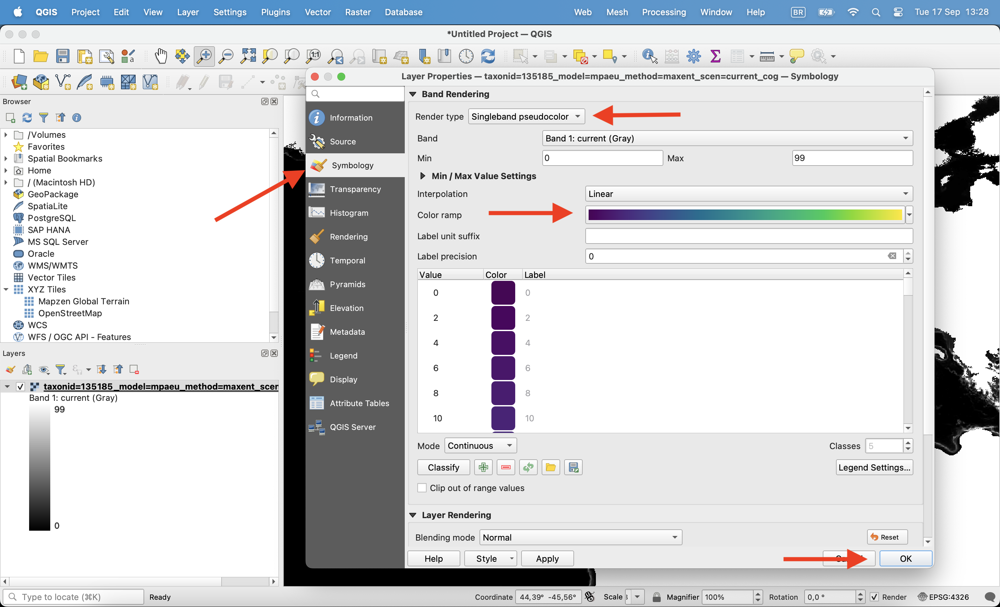
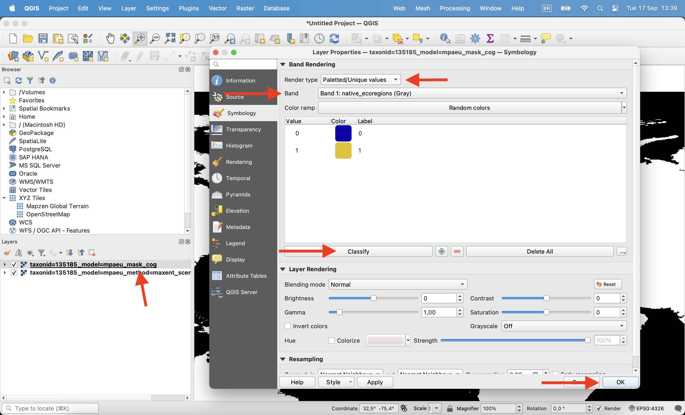
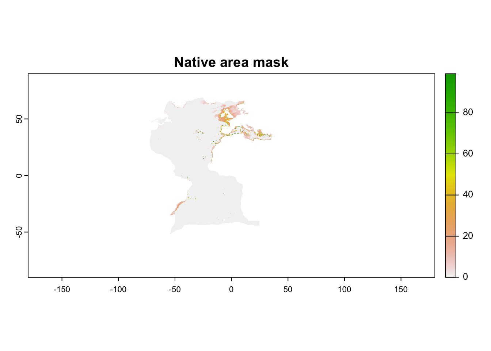
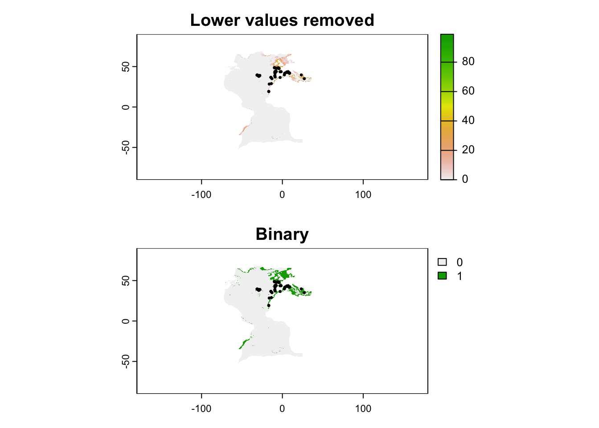

install.packages("aws.s3")
# Sync the contents of an S3 bucket subfolder to your local folder
s3sync(
bucket = "bucket-name",
prefix = "results/species/taxonid=124287", # Subfolder in the bucket
save_to = "./your-folder", # Local folder
region = "", # Region can be left empty for public buckets
use_https = TRUE # This is equivalent to "--no-sign-request"
)6 Accessing and using the distribution models
6.1 Explore through the map platform
To be updated
6.2 Download to analyze locally
6.2.1 Downloading the data
Predictions and the raw (quality-controlled) data, as well as additional files (e.g. model metrics) are available through both the mapping platform and AWS S3.
To explore the files available, go to https://mpaeu-dist.s3.amazonaws.com/index.html
Download a specific file
If you want to download only a specific file, you can use the explorer to locate the file and then click on it to download.
Download complete species folders
To download a specific folder, the best way is to use the aws CLI program (see here). For example, if we want to download data for the species Echinus esculentus, we need only its AphiaID, which you can find on WoRMS. In this case the AphiaID is 124287 Then, from the command line we can do:
aws s3 sync s3://mpaeu-dist/results/species/taxonid=124287 ./your-folder --no-sign-requestNote that the bucket is organized this way:
├── index.html
├── results : All distribution modelling results for the MPA Europe project
│ ├── species : Species Distribution Modelling results
│ │ ├── ...
│ │ └── taxonid=[AphiaID] : Data for each species
│ │
│ ├── habitat : Habitat Distribution Modelling results
│ └── diversity : Diversity maps and analyses
│
└── source : Additional data necessary for running the models, not possible to store on GitHubAnd thus for accessing any species folder you just need:
s3://bucket-name/subfolder/ + the AphiaID of the species
It is also possible to do this operation through R using the aws.s3 package:
6.2.2 Data structure
Outputs from WP3 (Biodiversity modelling) always follow the same standard structure. File names will always contain at least two components:
taxonid=[AphiaID]: identify the taxon model=[Model run acronym]: identify the modelling exercise
Additional information also follow a similar syntax (inspired on the hive format) and is identified by “[the parameter]=[the value]”. For example, a prediction file for a species will look like this:
taxonid=135185_model=mpaeu_method=maxent_scen=ssp126_dec100_cog.tif
method is the algorithm used for the model and scen the scenario and period of the prediction. In this case _cog simply indicates that the output is COG optimized.
A species folder have the following structure:
├── figures : Plots for quick exploration of results
├── metrics : All metrics and additional information (e.g. CV metrics, response curves, etc.)
├── models : RDS files containing the fitted models, ready for predicting in new data
├── predictions : The TIF files with predictions
│
├── ..._what=fitocc.parquet : Occurrence points used to fit the model
└── ..._what=log.json : The log file containing all model fit detailsWe will see the folder metrics and predictions in more details, but first it is essential to understand the file ..what=log.json.
6.2.2.1 Understanding the log file
The log file contains all details about the model fitting, including best parameters of model tuning. It is rich document that enable easier reproduction of the results obtained. Here is a sample log file for the species with AphiaID 13185 (taxonid=135185_model=mpaeu_what=log.json):
You can open this file in any text editor in your computer, or through R using for example the jsonlite::read_json(). The package obissdm contains the function view_log to help visualize those files.
Each parameter is explained below:
6.2.2.2 The metrics folder
This is an example of the content of a metrics folder:
"taxonid=[AphiaID]_model=[model-acronym]_method=ensemble_what=cvmetrics.parquet" "taxonid=[AphiaID]_model=[model-acronym]_method=ensemble_what=respcurves.parquet"
"taxonid=[AphiaID]_model=[model-acronym]_method=ensemble_what=varimportance.parquet" "taxonid=[AphiaID]_model=[model-acronym]_method=maxent_what=cvmetrics.parquet"
"taxonid=[AphiaID]_model=[model-acronym]_method=maxent_what=fullmetrics.parquet" "taxonid=[AphiaID]_model=[model-acronym]_method=maxent_what=respcurves.parquet"
"taxonid=[AphiaID]_model=[model-acronym]_method=maxent_what=varimportance.parquet" "taxonid=[AphiaID]_model=[model-acronym]_method=rf_classification_ds_what=cvmetrics.parquet"
"taxonid=[AphiaID]_model=[model-acronym]_method=rf_classification_ds_what=fullmetrics.parquet" "taxonid=[AphiaID]_model=[model-acronym]_method=rf_classification_ds_what=respcurves.parquet"
"taxonid=[AphiaID]_model=[model-acronym]_method=rf_classification_ds_what=varimportance.parquet" "taxonid=[AphiaID]_model=[model-acronym]_method=xgboost_what=cvmetrics.parquet"
"taxonid=[AphiaID]_model=[model-acronym]_method=xgboost_what=fullmetrics.parquet" "taxonid=[AphiaID]_model=[model-acronym]_method=xgboost_what=respcurves.parquet"
"taxonid=[AphiaID]_model=[model-acronym]_method=xgboost_what=varimportance.parquet" "taxonid=[AphiaID]_model=[model-acronym]_what=biasmetrics.rds"
"taxonid=[AphiaID]_model=[model-acronym]_what=posteval_hyperniche.parquet" "taxonid=[AphiaID]_model=[model-acronym]_what=thermmetrics.json"
"taxonid=[AphiaID]_model=[model-acronym]_what=thresholds.parquet" There are many files available, but some are just the same for different methods. The unique types of files are:
..._what=cvmetrics.parquet: cross-validation metrics for the model..._what=varimportance.parquet: variables importance..._what=fullmetrics.parquet": metrics for the full model..._what=respcurves.parquet": partial response curves for each variable..._what=thresholds.parquet: thresholds that can be used to..._what=biasmetrics.rds: an RDS file with metrics of data spatial bias..._what=posteval_hyperniche.parquet: post-evaluation metrics for the hyperniche model..._what=thermmetrics.json: thermal metrics
Note
Most files are in parquet format, which is a very efficient storage format. The easiest way to work with this type of data is through R, using the arrow package: arrow::open_dataset("parquet-file.parquet"). This will open a data.frame (tibble) that you can use as usual. If you don’t know R or any other programming language, then you can use an extension (on Google Drive, for example) or you can download the specific file you need in csv format using this tool.
Two files are specially important: the cvmetrics which contain the metrics to assess the model predictive capacity, and thresholds which contains the values necessary for converting the predictions into binary format (if necessary). See the section “Analyzing the data” to understand more about the content of these files.
6.2.2.3 The predictions folder
This is an example of the content of a predictions folder:
[1] "taxonid=[AphiaID]_model=[model-acronym]_mask_cog.tif" "taxonid=[AphiaID]_model=[model-acronym]_method=ensemble_scen=current_cog.tif"
[3] "taxonid=[AphiaID]_model=[model-acronym]_method=ensemble_scen=current_what=boot_cog.tif" "taxonid=[AphiaID]_model=[model-acronym]_method=ensemble_scen=ssp126_dec100_cog.tif"
[5] "taxonid=[AphiaID]_model=[model-acronym]_method=ensemble_scen=ssp126_dec50_cog.tif" "taxonid=[AphiaID]_model=[model-acronym]_method=ensemble_scen=ssp245_dec100_cog.tif"
[7] "taxonid=[AphiaID]_model=[model-acronym]_method=ensemble_scen=ssp245_dec50_cog.tif" "taxonid=[AphiaID]_model=[model-acronym]_method=ensemble_scen=ssp370_dec100_cog.tif"
[9] "taxonid=[AphiaID]_model=[model-acronym]_method=ensemble_scen=ssp370_dec50_cog.tif" "taxonid=[AphiaID]_model=[model-acronym]_method=ensemble_scen=ssp460_dec100_cog.tif"
[11] "taxonid=[AphiaID]_model=[model-acronym]_method=ensemble_scen=ssp460_dec50_cog.tif" "taxonid=[AphiaID]_model=[model-acronym]_method=ensemble_scen=ssp585_dec100_cog.tif"
[13] "taxonid=[AphiaID]_model=[model-acronym]_method=ensemble_scen=ssp585_dec50_cog.tif" "taxonid=[AphiaID]_model=[model-acronym]_method=maxent_scen=current_cog.tif"
[15] "taxonid=[AphiaID]_model=[model-acronym]_method=maxent_scen=ssp126_dec100_cog.tif" "taxonid=[AphiaID]_model=[model-acronym]_method=maxent_scen=ssp126_dec50_cog.tif"
[17] "taxonid=[AphiaID]_model=[model-acronym]_method=maxent_scen=ssp245_dec100_cog.tif" "taxonid=[AphiaID]_model=[model-acronym]_method=maxent_scen=ssp245_dec50_cog.tif"
[19] "taxonid=[AphiaID]_model=[model-acronym]_method=maxent_scen=ssp370_dec100_cog.tif" "taxonid=[AphiaID]_model=[model-acronym]_method=maxent_scen=ssp370_dec50_cog.tif"
[21] "taxonid=[AphiaID]_model=[model-acronym]_method=maxent_scen=ssp460_dec100_cog.tif" "taxonid=[AphiaID]_model=[model-acronym]_method=maxent_scen=ssp460_dec50_cog.tif"
[23] "taxonid=[AphiaID]_model=[model-acronym]_method=maxent_scen=ssp585_dec100_cog.tif" "taxonid=[AphiaID]_model=[model-acronym]_method=maxent_scen=ssp585_dec50_cog.tif"
[25] "taxonid=[AphiaID]_model=[model-acronym]_method=rf_classification_ds_scen=current_cog.tif" "taxonid=[AphiaID]_model=[model-acronym]_method=rf_classification_ds_scen=ssp126_dec100_cog.tif"
[27] "taxonid=[AphiaID]_model=[model-acronym]_method=rf_classification_ds_scen=ssp126_dec50_cog.tif" "taxonid=[AphiaID]_model=[model-acronym]_method=rf_classification_ds_scen=ssp245_dec100_cog.tif"
[29] "taxonid=[AphiaID]_model=[model-acronym]_method=rf_classification_ds_scen=ssp245_dec50_cog.tif" "taxonid=[AphiaID]_model=[model-acronym]_method=rf_classification_ds_scen=ssp370_dec100_cog.tif"
[31] "taxonid=[AphiaID]_model=[model-acronym]_method=rf_classification_ds_scen=ssp370_dec50_cog.tif" "taxonid=[AphiaID]_model=[model-acronym]_method=rf_classification_ds_scen=ssp460_dec100_cog.tif"
[33] "taxonid=[AphiaID]_model=[model-acronym]_method=rf_classification_ds_scen=ssp460_dec50_cog.tif" "taxonid=[AphiaID]_model=[model-acronym]_method=rf_classification_ds_scen=ssp585_dec100_cog.tif"
[35] "taxonid=[AphiaID]_model=[model-acronym]_method=rf_classification_ds_scen=ssp585_dec50_cog.tif" "taxonid=[AphiaID]_model=[model-acronym]_method=xgboost_scen=current_cog.tif"
[37] "taxonid=[AphiaID]_model=[model-acronym]_method=xgboost_scen=ssp126_dec100_cog.tif" "taxonid=[AphiaID]_model=[model-acronym]_method=xgboost_scen=ssp126_dec50_cog.tif"
[39] "taxonid=[AphiaID]_model=[model-acronym]_method=xgboost_scen=ssp245_dec100_cog.tif" "taxonid=[AphiaID]_model=[model-acronym]_method=xgboost_scen=ssp245_dec50_cog.tif"
[41] "taxonid=[AphiaID]_model=[model-acronym]_method=xgboost_scen=ssp370_dec100_cog.tif" "taxonid=[AphiaID]_model=[model-acronym]_method=xgboost_scen=ssp370_dec50_cog.tif"
[43] "taxonid=[AphiaID]_model=[model-acronym]_method=xgboost_scen=ssp460_dec100_cog.tif" "taxonid=[AphiaID]_model=[model-acronym]_method=xgboost_scen=ssp460_dec50_cog.tif"
[45] "taxonid=[AphiaID]_model=[model-acronym]_method=xgboost_scen=ssp585_dec100_cog.tif" "taxonid=[AphiaID]_model=[model-acronym]_method=xgboost_scen=ssp585_dec50_cog.tif"
[47] "taxonid=[AphiaID]_model=[model-acronym]_what=mess_cog.tif" "taxonid=[AphiaID]_model=[model-acronym]_what=shape_cog.tif"
[49] "taxonid=[AphiaID]_model=[model-acronym]_what=thermenvelope.parquet" Even more files available, but again many are just the same for different methods. The unique types of files are:
- predictions: spatial predictions of models (following the pattern
..._method=[name of algorithm]_scen=[scenario and if applicable period]_cog.tif) - bootstrap: uncertainty in the models assessed as bootstrap. May not be available to all algorithms. Files follow the same pattern as the predictions, with
what=bootadded. - mask: the file named
_mask_cog.tifcontains the mask to limit predictions to specific areas (e.g. the native areas) - MESS map (uncertainty): the file
_what=mess_cog.tifcontains the MESS analysis, which measures extrapolation - SHAPE map (uncertainty): as MESS, the file
_what=shape_cog.tifcontains the SHAPE analysis which measures extrapolation - Thermal envelopes: the only file that is not a GeoTIFF is the
_what=thermenvelope.parquet. This is a GeoParquet which contains the shapefiles of thermal envelopes for the species in different scenarios.
6.3 Processing data
You can analyze the SDM data in the tool you prefer - either through a programming language like R or Python, or using GIS programs like QGIS and ArcGIS. Here we will provide codes examples in R, the language used to produce the models, and also some examples in QGIS.
Note that for working in GIS programs, for some applications you will need to convert the Parquet files to CSV. There are multiple ways of doing that: you can use our R function (see below), this online tool, or Python pandas library. If you downloaded your data through the maps platform, then files are already in .csv format.
6.3.1 Loading predictions
The easiest way to work with raster (GeoTIFF) files on R is using the terra package (alternatively, you can work with package stars).
We will run examples for the species with taxonID 135185 with results stored in a folder called results. To open a single prediction:
library(terra)
current <- rast("files/results/taxonid=135185/model=mpaeu/predictions/taxonid=135185_model=mpaeu_method=maxent_scen=current_cog.tif")
currentclass : SpatRaster
dimensions : 3600, 7200, 1 (nrow, ncol, nlyr)
resolution : 0.05, 0.05 (x, y)
extent : -180, 180, -90, 90 (xmin, xmax, ymin, ymax)
coord. ref. : lon/lat WGS 84 (EPSG:4326)
source : taxonid=135185_model=mpaeu_method=maxent_scen=current_cog.tif
name : current plot(current)
All predictions folders always include a mask file. Let’s also open this file:
mask_file <- rast("files/results/taxonid=135185/model=mpaeu/predictions/taxonid=135185_model=mpaeu_mask_cog.tif")
mask_fileclass : SpatRaster
dimensions : 3600, 7200, 6 (nrow, ncol, nlyr)
resolution : 0.05, 0.05 (x, y)
extent : -180, 180, -90, 90 (xmin, xmax, ymin, ymax)
coord. ref. : lon/lat WGS 84 (EPSG:4326)
source : taxonid=135185_model=mpaeu_mask_cog.tif
names : nativ~gions, fit_e~gions, fit_region, convex_hull, minbo~ircle, buffer100m plot(mask_file$native_ecoregions)
Open the file on QGIS clicking on the Open data source manager on the corner. Chose the raster file you want to open and click ok.

Once opened, click with the right button on the layer and click in properties.

Then, on the Symbology tab change render type to ‘Singleband pseudocolor’, chose the color ramp and click ok.

All predictions folders always include a mask file. Let’s also open this file. The maskfile is a multiband raster, with each band being a different mask. You can click with the right button, enter in properties and chose to visualize only one of the bands. Use the “Paletted/Unique values” option to color this layer (0/1).

6.3.2 Applying masks and converting to binary
Predictions show the relative suitability of a place, in terms of its environmental conditions. However, predictions are made to the whole globe, including areas which may not be reachable by the species. Thus, it is always advisable to mask the predictions by one of the masks provided (or you can create one based on your hypothesis). In this case, we will use the realms in which the species occurs today (what we assume to be the “native area” of the species).
On R, the first step is to convert the 0 values (negative mask) to NA values, as necessary by the function. Then we apply the target mask to our prediction:
mask_file[mask_file == 0] <- NA
current <- mask(current, mask_file$native_ecoregions)
plot(current, main = "Native area mask")
Soon…
Now that we masked the prediction, we may want to limit it to only areas that are more likely to have the species according to a certain threshold. Ideally, you should always work with continuous predictions, but in some cases a binary map (presence/absence of species) may be desirable. We will also load the occurrence data to show how the mode influences our view of suitable areas.
On R, we start by loading the occurrence data and the table with thresholds. Here we will apply the P10 threshold, which removes all values lower than the 10th percentile of values in the occurrence records.
library(arrow)
records <- read_parquet("files/results/taxonid=135185/model=mpaeu/taxonid=135185_model=mpaeu_what=fitocc.parquet")
thresholds <- read_parquet("files/results/taxonid=135185/model=mpaeu/metrics/taxonid=135185_model=mpaeu_what=thresholds.parquet")
p10 <- thresholds$p10[thresholds$model == "maxent"]And then we apply the threshold to the map. We will do the two modes: the first simply remove areas below the threshold and the second actually converts in binary format.
# create copies
th_removed <- current
th_binary <- current
# Apply thresholds
th_removed[th_removed < p10] <- 0
th_binary[th_binary < p10] <- 0
th_binary[th_binary > 0] <- 1
# Plot
par(mfrow = c(2,1))
plot(th_removed, main = "Lower values removed")
points(records, pch = 20, cex = .5)
plot(th_binary, main = "Binary")
points(records, pch = 20, cex = .5)
Soon…